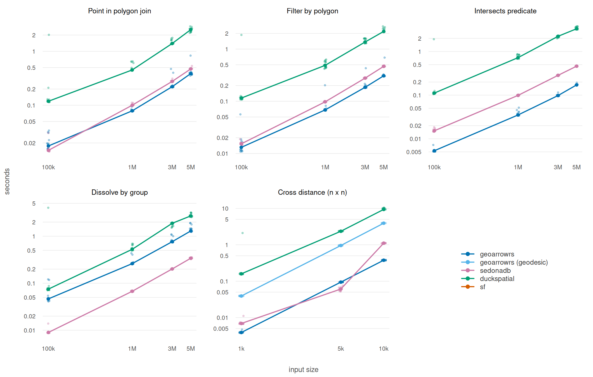

The wonderful {duckspatial} R package—which delegates operations to DuckDB has published bench marks for operations.
This article compares geoarrowrs implementations to sf and duckspatial by recreating the benchmark but including geoarrow-rs.
See the original duckspatial benchmark.
This version of the benchmark compares the peformance of:
- duckspatial
- {sedonadb}
- geoarrowrs
The earth is a sphere note a plane
One of the issues the duckdbspatial benchmark—is that is calculates incorrect distances. sf delegates to s2 to have very accurate spherical distance calculations—this comes at the cost of speed.
Using planar distances for calculating the distance from Jakarta to New York calculates the distance through the earth.
| sysname | Darwin |
| release | 25.5.0 |
| machine | arm64 |
| nodename | josi-mini-m4-pro.lan |
| cores | 14 |
| r | 4.6.1 |
| geoarrowrs | 0.0.0.9000 |
| sf | 1.1.2 |
| duckspatial | 1.2.1 |
| duckdb | 1.5.5 |
| run_at | 2026-09-11 15:56:12 PDT |
| op | n | duckspatial | geoarrowrs | geoarrowrs (geodesic) | sedonadb |
|---|---|---|---|---|---|
| join | 100,000 | 0.1187 | 0.0176 | NA | 0.0146 |
| join | 1,000,000 | 0.4516 | 0.0789 | NA | 0.1002 |
| join | 3,000,000 | 1.3973 | 0.2212 | NA | 0.2770 |
| join | 5,000,000 | 2.5262 | 0.3870 | NA | 0.4721 |
| filter | 100,000 | 0.1152 | 0.0131 | NA | 0.0153 |
| filter | 1,000,000 | 0.4884 | 0.0683 | NA | 0.0976 |
| filter | 3,000,000 | 1.3687 | 0.1855 | NA | 0.2782 |
| filter | 5,000,000 | 2.1841 | 0.3080 | NA | 0.4676 |
| intersects | 100,000 | 0.1114 | 0.0053 | NA | 0.0152 |
| intersects | 1,000,000 | 0.7242 | 0.0351 | NA | 0.0987 |
| intersects | 3,000,000 | 2.2345 | 0.0979 | NA | 0.2844 |
| intersects | 5,000,000 | 3.3304 | 0.1717 | NA | 0.4615 |
| dissolve | 100,000 | 0.0751 | 0.0466 | NA | 0.0090 |
| dissolve | 1,000,000 | 0.5276 | 0.2617 | NA | 0.0675 |
| dissolve | 3,000,000 | 1.8852 | 0.7662 | NA | 0.2016 |
| dissolve | 5,000,000 | 2.7094 | 1.2968 | NA | 0.3409 |
| distance | 1,000 | 0.1594 | 0.0039 | 0.0392 | 0.0069 |
| distance | 5,000 | 2.3545 | 0.0943 | 0.9563 | 0.0610 |
| distance | 10,000 | 9.3718 | 0.3769 | 3.9184 | 1.1086 |
bench/duckspatial/setup.R
library(arrow)
library(dplyr)
library(nanoarrow)
library(sf)
library(geoarrowrs)
SIZES <- as.numeric(strsplit(
Sys.getenv("DUCKSPATIAL_BENCH_SIZES", "1e5,1e6,3e6,5e6"),
",",
fixed = TRUE
)[[1]])
SEED <- 27
CACHE <- Sys.getenv(
"DUCKSPATIAL_BENCH_DATA",
tools::R_user_dir("geoarrowrs", "cache")
)
REPS <- as.integer(Sys.getenv("DUCKSPATIAL_BENCH_REPS", "15"))
HAS_DUCKSPATIAL <- requireNamespace("duckspatial", quietly = TRUE)
HAS_SEDONADB <- requireNamespace("sedonadb", quietly = TRUE)
if (HAS_SEDONADB) {
library(sedonadb)
}
make_points <- function(n) {
data.frame(
id = 1:n,
x = runif(n, min = -180, max = 180),
y = runif(n, min = -90, max = 90),
value = rnorm(n, mean = 100, sd = 15),
category = sample(c("A", "B", "C", "D"), n, replace = TRUE)
) |>
st_as_sf(coords = c("x", "y"), crs = 4326)
}
make_polygons <- function(n = 10000) {
polys <- vector("list", n)
for (i in seq_len(n)) {
cx <- runif(1, min = -170, max = 170)
cy <- runif(1, min = -80, max = 80)
w <- runif(1, min = 0.5, max = 3)
h <- runif(1, min = 0.5, max = 3)
polys[[i]] <- st_polygon(list(cbind(
c(cx - w / 2, cx + w / 2, cx + w / 2, cx - w / 2, cx - w / 2),
c(cy - h / 2, cy - h / 2, cy + h / 2, cy + h / 2, cy - h / 2)
)))
}
st_sf(
poly_id = seq_len(n),
region = sample(c("North", "South", "East", "West"), n, replace = TRUE),
population = sample(1000:1000000, n, replace = TRUE),
geometry = st_sfc(polys, crs = 4326)
)
}
cached <- function(name, make) {
dir.create(CACHE, showWarnings = FALSE, recursive = TRUE)
path <- file.path(CACHE, paste0(name, ".rds"))
if (!file.exists(path)) {
saveRDS(withr::with_seed(SEED, make()), path)
}
readRDS(path)
}
points_sf <- function(n) {
cached(paste0("points-", format(n, scientific = FALSE)), \() make_points(n))
}
polygons_sf <- function() cached("polygons", make_polygons)
as_ga_frame <- function(x) {
out <- st_drop_geometry(x)
out$geometry <- geoarrow::as_geoarrow_vctr(st_geometry(x))
out
}
ddbs_rows <- function(x) pull(count(x), n)
bench <- function(op, n, pkg, expr, rows) {
work <- substitute(expr)
count <- substitute(rows)
caller <- parent.frame()
log <- Sys.getenv("DUCKSPATIAL_BENCH_LOG", "")
seconds <- numeric(REPS)
n_rows <- NA_integer_
for (rep in seq_len(REPS)) {
t0 <- Sys.time()
eval(work, caller)
seconds[rep] <- as.numeric(Sys.time() - t0, units = "secs")
if (rep == 1L) {
n_rows <- eval(count, caller)
}
if (nzchar(log)) {
started <- file.exists(log)
write.table(
data.frame(
op,
n = as.integer(n),
pkg,
rep,
seconds = round(seconds[rep], 4),
rows = n_rows
),
log,
append = started,
col.names = !started,
row.names = FALSE,
sep = ",",
qmethod = "double"
)
}
}
cat(sprintf(
"%-10s n = %-9s %-22s %7.2fs median (%.2f-%.2f) %s rows\n",
op,
format(n, scientific = FALSE),
pkg,
median(seconds),
min(seconds),
max(seconds),
format(n_rows, big.mark = ",")
))
invisible(gc())
}bench/duckspatial/connect.R
source("bench/duckspatial/setup.R")
if (HAS_DUCKSPATIAL) {
two <- points_sf(2)
bench(
"connect",
2,
"duckspatial",
out <- duckspatial::ddbs_intersects(two, two, quiet = TRUE),
ddbs_rows(out)
)
bench(
"connect",
2,
"duckspatial (second call)",
out <- duckspatial::ddbs_intersects(two, two, quiet = TRUE),
ddbs_rows(out)
)
}bench/duckspatial/join.R
source("bench/duckspatial/setup.R")
polys <- polygons_sf()
polys_ga <- as_ga_frame(polys)
for (n in SIZES) {
pts <- points_sf(n)
bench(
"join",
n,
"geoarrowrs",
out <- ga_join(as_ga_frame(pts), polys_ga, ga_sparse_within, left = FALSE),
out$num_rows
)
if (HAS_DUCKSPATIAL) {
bench(
"join",
n,
"duckspatial",
out <- duckspatial::ddbs_join(pts, polys, join = "within", quiet = TRUE),
ddbs_rows(out)
)
}
if (HAS_SEDONADB) {
bench(
"join",
n,
"sedonadb",
{
sd_to_view(as_sedonadb_dataframe(pts), "pts", overwrite = TRUE)
sd_to_view(as_sedonadb_dataframe(polys), "polys", overwrite = TRUE)
out <- sd_compute(sd_sql(
"SELECT a.*, b.poly_id, b.region, b.population
FROM pts a JOIN polys b ON ST_Within(a.geometry, b.geometry)"
))
},
sd_count(out)
)
}
}bench/duckspatial/filter.R
source("bench/duckspatial/setup.R")
polys <- polygons_sf()
polys_ga <- as_ga_frame(polys)
for (n in SIZES) {
pts <- points_sf(n)
bench(
"filter",
n,
"geoarrowrs",
out <- ga_filter(as_ga_frame(pts), polys_ga),
out$num_rows
)
if (HAS_DUCKSPATIAL) {
bench(
"filter",
n,
"duckspatial",
out <- duckspatial::ddbs_filter(pts, polys, quiet = TRUE),
ddbs_rows(out)
)
}
if (HAS_SEDONADB) {
bench(
"filter",
n,
"sedonadb",
{
sd_to_view(as_sedonadb_dataframe(pts), "pts", overwrite = TRUE)
sd_to_view(as_sedonadb_dataframe(polys), "polys", overwrite = TRUE)
out <- sd_compute(sd_sql(
"SELECT a.* FROM pts a
WHERE EXISTS (
SELECT 1 FROM polys b WHERE ST_Intersects(a.geometry, b.geometry)
)"
))
},
sd_count(out)
)
}
}bench/duckspatial/intersects.R
source("bench/duckspatial/setup.R")
polys <- polygons_sf()
polys_ga <- geoarrow::as_geoarrow_array(st_geometry(polys))
for (n in SIZES) {
pts <- points_sf(n)
bench(
"intersects",
n,
"geoarrowrs",
out <- ga_sparse_intersects(
geoarrow::as_geoarrow_array(st_geometry(pts)),
polys_ga
),
out$length
)
if (HAS_DUCKSPATIAL) {
bench(
"intersects",
n,
"duckspatial",
out <- duckspatial::ddbs_intersects(pts, polys, quiet = TRUE),
ddbs_rows(out)
)
}
if (HAS_SEDONADB) {
bench(
"intersects",
n,
"sedonadb",
{
sd_to_view(as_sedonadb_dataframe(pts), "pts", overwrite = TRUE)
sd_to_view(as_sedonadb_dataframe(polys), "polys", overwrite = TRUE)
out <- sd_compute(sd_sql(
"SELECT a.id, b.poly_id
FROM pts a JOIN polys b ON ST_Intersects(a.geometry, b.geometry)"
))
},
sd_count(out)
)
}
}bench/duckspatial/dissolve.R
source("bench/duckspatial/setup.R")
for (n in SIZES) {
pts <- points_sf(n)
bench(
"dissolve",
n,
"geoarrowrs",
{
tbl <- as_arrow_table(st_drop_geometry(pts))
tbl$geometry <- as_arrow_array(wk::as_wkb(st_geometry(pts)))$cast(
arrow::binary()
)
groups <- tbl |> count(category) |> arrange(category) |> compute()
rows <- tbl |> arrange(category) |> compute()
out <- ga_collect_agg(
as_nanoarrow_array(rows$geometry),
sizes = as.vector(groups$n)
)
},
out$length
)
if (HAS_DUCKSPATIAL) {
bench(
"dissolve",
n,
"duckspatial",
out <- duckspatial::ddbs_union_agg(pts, by = "category", quiet = TRUE),
ddbs_rows(out)
)
}
if (HAS_SEDONADB) {
bench(
"dissolve",
n,
"sedonadb",
{
sd_to_view(as_sedonadb_dataframe(pts), "pts", overwrite = TRUE)
out <- sd_compute(sd_sql(
"SELECT category, ST_Collect_Agg(geometry) AS geometry
FROM pts GROUP BY category"
))
},
sd_count(out)
)
}
}bench/duckspatial/distance.R
source("bench/duckspatial/setup.R")
for (n in c(1000, 5000, 10000)) {
pts <- points_sf(n)
geom <- geoarrow::as_geoarrow_array(st_geometry(pts))
bench(
"distance",
n,
"geoarrowrs",
out <- ga_cross_distance(geom, geom, "haversine"),
out$length
)
bench(
"distance",
n,
"geoarrowrs (geodesic)",
out <- ga_cross_distance(geom, geom, "geodesic"),
out$length
)
if (HAS_DUCKSPATIAL) {
bench(
"distance",
n,
"duckspatial",
out <- duckspatial::ddbs_distance(pts, pts, quiet = TRUE),
ddbs_rows(out)
)
}
if (HAS_SEDONADB) {
bench(
"distance",
n,
"sedonadb",
{
sd_to_view(as_sedonadb_dataframe(pts), "pts", overwrite = TRUE)
out <- sd_compute(sd_sql(
"SELECT ST_Distance(a.geometry, b.geometry) AS distance
FROM pts a CROSS JOIN pts b"
))
},
sd_count(out)
)
}
}